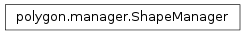

ShapeManager¶

-
class
ShapeManager(figure, canvas, master)[source]¶ Manages all shapes present on the screen, writes to database on call and provides other export functionality
-
anchor_rectangle(event)[source]¶ Informs the correct shape list’s blank object to plot a corner of a rectangle. :param event: A backend passed
matplotlib.backend_bases.MouseEventobject
-
clear_lines()[source]¶ Clear any existing lines or unfilled shapes when the ‘Free Draw’ button is unpressed. This is fix a bug that is caused by polygons not being finished but corrupting future shapes.
-
clear_refs()[source]¶ Clear all references to the current figure, this is called in the
Calipsoclass when a plot is to be set as to ensure no dangling references are left. If we we’re writing this in Rust we wouldn’t need to worry about this because Rust has better ownership semantics ;)
-
delete(event)[source]¶ Delete the specified object from the screen, searches through the current list to find the artist that was clicked on
Parameters: event – A passed matplotlib.backend_bases.PickEventobject
-
fill_rectangle(event)[source]¶ Informs the correct shape list’s blank object to draw a rectangle to the screen using the provided coordinates
Parameters: event – A backend passed matplotlib.backend_bases.MouseEventobject
-
find_shape(event)[source]¶ Return the handle to the shape found via the user clicking on one
Parameters: event – A passed matplotlib.backend_bases.PickEventobject
-
static
generate_tag()[source]¶ Produces a unique tag for each shape for each session
Return type: str
-
get_count()[source]¶ Get the total amount of objects in existence inside ShapeManager, adds all lists up and subtracts the empty objects that are always appended to the end of the lists.
Return type: int
-
get_current_list()[source]¶ Return the current list
Warning
This function should never be used for any write operation. Using this function should be for read only.
Return type: list
-
highlight(tag)[source]¶ Highlight the shape specified by
tag. Also keeps track of a the previous highlight in order to unhighlight it before highlighting the current tagParameters: tag (str) – The tag of the object
-
is_all_saved(plot=None)[source]¶ Checks if all the shapes have been saved. If plot is None, the method will check if all shapes in every plot has been saved. If a plot is specified, then it will only check the shapes in the specified plot. This method will automatically ignore the last blank shapes.
Parameters: plot – the plot of the shapes to check
-
outline()[source]¶ Toggle whether current shapes should be outlined or remained filled on the screen
-
plot_point(event)[source]¶ Plot a single point to the screen for the current shape object, if other points exist, a line is drawn between then until a polygon is formed
Parameters: event – A matplotlib.backend_bases.MouseEventpassed object
-
properties(event)[source]¶ Return the properties of the shape clicked on by the user and create a small tooltip which displays these properties
Parameters: event – A passed matplotlib.backend_bases.PickEventobject
-
read_plot(filename='', read_from_str='')[source]¶ Reads shapes from either a string or a file in JSON format, and packs the screen with the shapes parsed. note: if a string is passed as well as a filename, the string takes priority
Parameters:
-
rubberband(event)[source]¶ Uses a blank shape to draw ‘helper rectangles’ that outline the final shape of the object. wrapper function for calling
polygon.Shapemethod.Parameters: event – A backend passes matplotlib.backend_bases.MouseEventobject
-
save_all_json(filename='')[source]¶ Same as
save_json, but save all shapes across all plots instead.Parameters: filename (str) – custom filename to save JSON objects to
-
save_db()[source]¶ Commit all polygons currently in display to the database. Existing database objects will simply be updated, while objects not present in the database will be assigned a new primary key and have an entry generated for them. Returns
Trueif success,FalseotherwiseReturn type: bool
-
save_json(filename='')[source]¶ Save all shapes visible on the screen to a previously specified JSON object, if no file is passed the internal file variable is used. There should never arise a case where no file is passed either from the internal or external parameters,
Calipsohas proper error checking.Parameters: filename (str) – custom filename to save JSON objects to
-
set_current(plot, fig)[source]¶ Set the current view to
plot, and draw any shapes that exist in the manager for this plot. This is called each time a new view is rendered to the screen byset_plotin CalipsoParameters: plot (int) – Acceptable plot constant from constants.py
-
set_hdf(hdf_filename)[source]¶ Set the internal HDF filename variable
Parameters: hdf_filename (str) – Name of new HDF filename
-
set_plot(plot)[source]¶ Determine which list current_list should alias, also set internal plot variable
Parameters: plot (constants.Plot) – Acceptable plot constant from constants.py
-